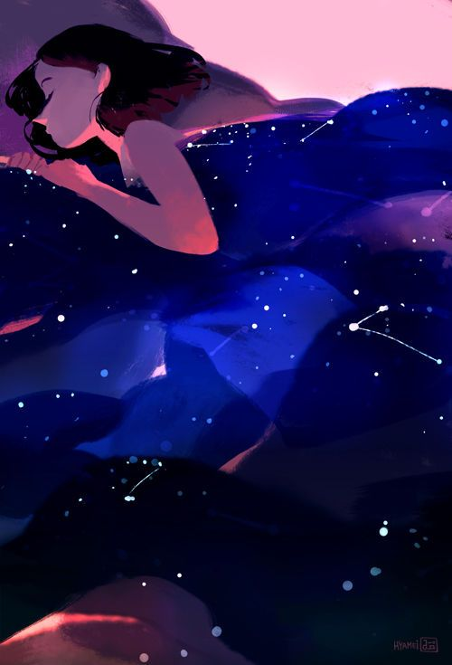

Question 1.
Have you seen anybody winnow grain at home or in a paddy field? What is the word in your language for winnowing? What do people use for winnowing?
Ans. No, I have never seen anybody winnow grain. Toorparabattadam is the word used for winnowing in telugu.
The process of separating heavier and lighter components of a mixture by wind or by blowing air is called winnowing. This method is used by farmers to separate lighter husk particles from heavier seeds of grain.
Question 2.
The poem you have just read is originally in Tamil. Do you know any such poems in your language?
Ans.
A Dream
She lay there, her limbs
Drawn close like a puppy.
Summer may pass her or
Rain or cold winter winds .

But a late arrival spring
Is still sitting at her feet
Like a dream gathered
In a cloth bundle, someone
Forgot to take with him.
----Telugu poem by Siva Reddy